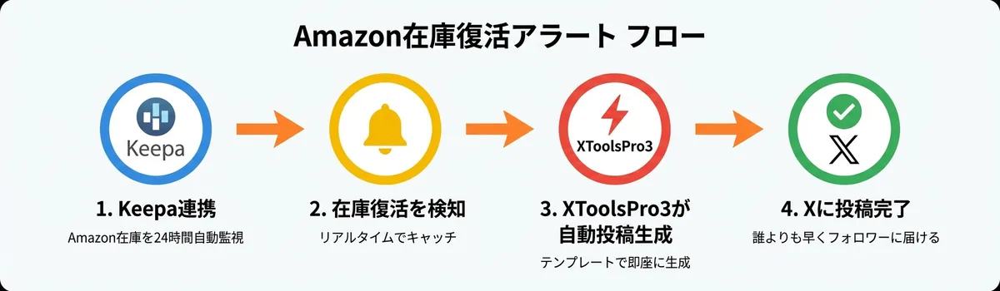
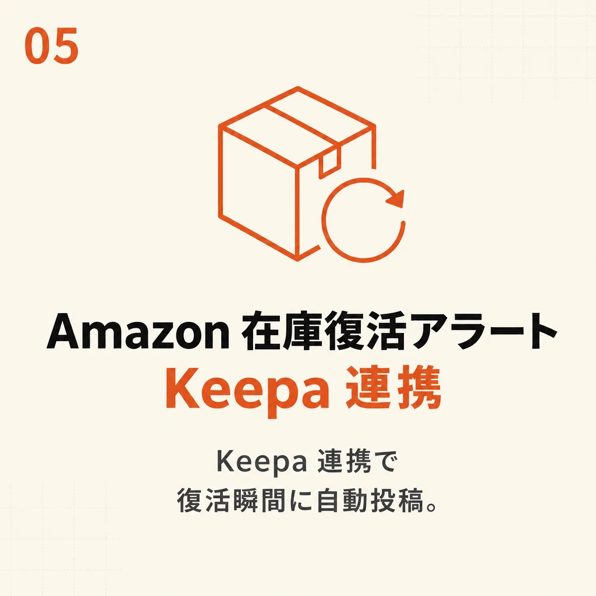
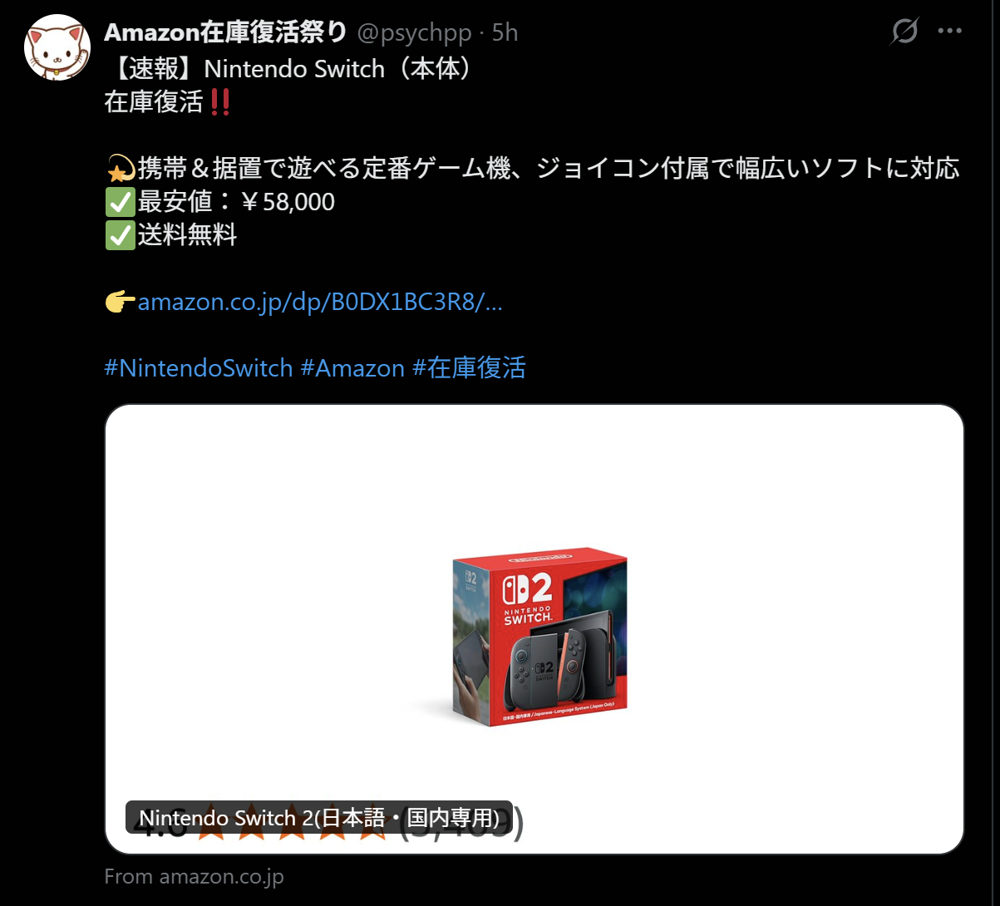
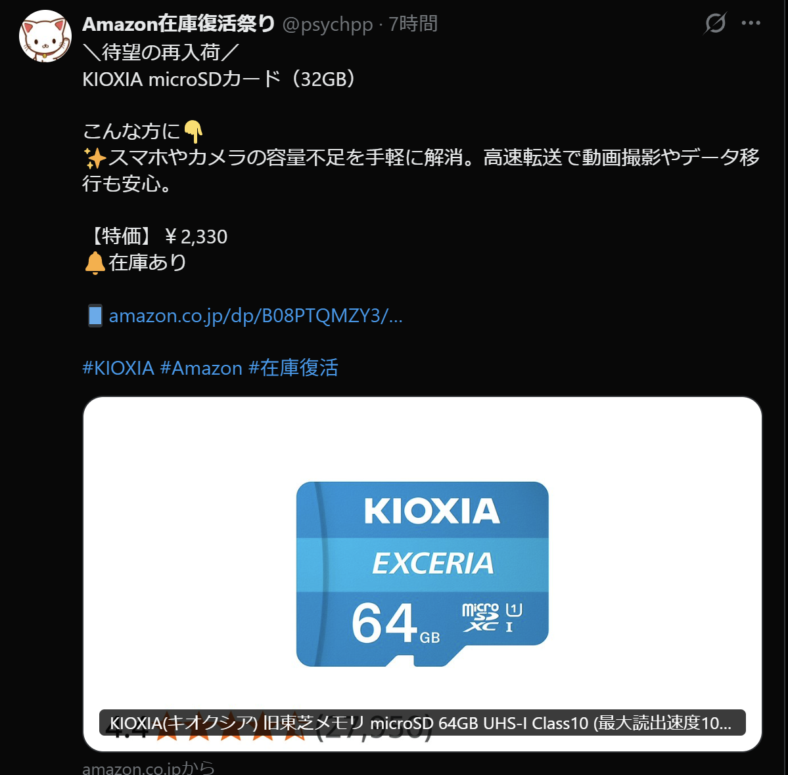
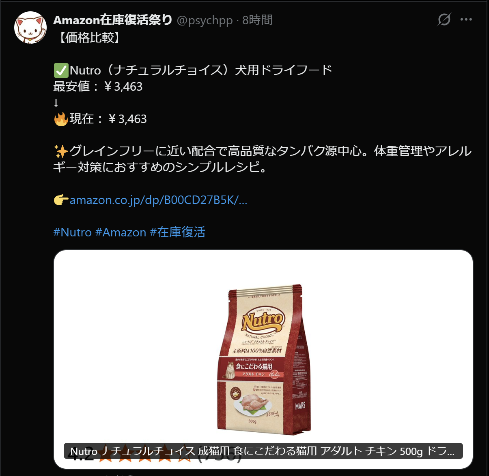

01
復活は一瞬で終わる
人気商品の在庫復活は数分〜数十分で再び完売。気づいた時には、もう売り切れています。
XToolsPro3 アドオン / Amazon在庫復活
人気商品が在庫切れ → 復活した「その瞬間」を、Keepa連携で全自動検知。
AIが最適な文章を自動生成し、アフィリエイトリンク付きでXアカウントへ自動ポストします。

01
人気商品の在庫復活は数分〜数十分で再び完売。気づいた時には、もう売り切れています。
02
いつ復活するかは誰にも分からない。何百商品を手動で見張り続けるのは現実的ではありません。
03
復活直後にアフィリンク付きで投稿できるかどうかで、クリックも成約も大きく変わります。
仕組み
監視対象を登録したら、検知から投稿まで人の手は一切いりません。
1
監視したい商品をKeepa経由で登録。XToolsPro3が在庫状況を常時ウォッチします。Keepaの有料版は不要です。
2
在庫が「在庫切れ→販売中」に変わった瞬間を自動でキャッチ。見逃しがありません。
3
商品名・価格・あなたのアフィリエイトID付きリンクを整形し、Xへ自動ポスト。人間らしい間隔で配信します。
AI文章生成
テンプレを垂れ流すだけのbotではありません。過去にXでエンゲージメントが高かった文章をAIが学習し、商品ごとに最適な“型”の文章をランダムで自動生成します。
学習 → 生成 → ランダム配信
↓ 実際の投稿を見ると、3つとも“型”がまったく違うことが分かります。

実際の投稿例
下の3投稿は、切り口（型）がすべて違います。すべてXToolsPro3のAIが商品ごとに自動生成し、自動投稿した実際のポストです。

Nintendo Switch（本体）
¥58,000送料無料

KIOXIA microSDカード（32GB）
特価 ¥2,330在庫あり

Nutro ナチュラルチョイス 犬用ドライフード
最安値 ¥3,463送料無料
運用中のアカウント → @psychpp「Amazon在庫復活祭り」
Amazon在庫復活パック
XToolsPro3 アドオン
単体「Amazon在庫復活パック」¥6,000、または全アドオン同梱の「フル買切り」¥19,800。月額・サブスクは一切ありません。

よくある質問
不要です。無料のKeepa連携で在庫復活の監視ができます。
なりません。過去にXでエンゲージメントが高かった文章を学習したAIが、商品ごとに最適な“型”（在庫復活／待望の再入荷／価格比較 など）をランダムで自動生成します。テンプレの垂れ流しにならず、人間らしい運用ができます。
在庫が「販売中」に変わったことを検知し次第、自動で投稿します。手動で気づいて投稿するより圧倒的に速く、復活直後の波に乗れます。
はい。あなたのAmazonアソシエイトIDを設定すれば、自動生成される投稿リンクにアフィリエイトIDが付与されます。
Keepaの登録枠の範囲で複数商品を監視できます。ジャンルや人気商品をまとめて見張れます。
Windows専用です。Mac / Linuxには対応していません。Windows 10 以降のPCをご用意ください。
はい。「Amazon在庫復活パック」（¥6,000）の単体購入が可能です。他のアドオンもまとめて欲しい方は、全5アドオン同梱のフル買切り（¥19,800）がお得です。詳細はnoteをご覧ください。
他にご質問があれば、お問い合わせフォームからお気軽にどうぞ。